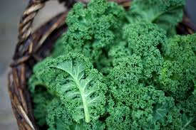

Vitamin K
Health Benefits:
- Blood Clotting
- Bone Health
Food Source:
- Tofu, Collard Greens, Spinach,
Turnip Greens, Mustard Greens, Beet Greens, Bok Choy,
Swiss Chard, Kale, Cabbage, Broccoli, Brussels Sprout,
Green Beans,Summer Squash, Fennel, Asparagus, Celery, Romaine Lettuce
- Yogurt, Cheese, Milk
- Cinnamon, Pasley, Cumin, Basil, Garlic, Oregano,
Cloves, Black pepper, Leeks
- Sesame seeds
- Sardines
- Oranges
